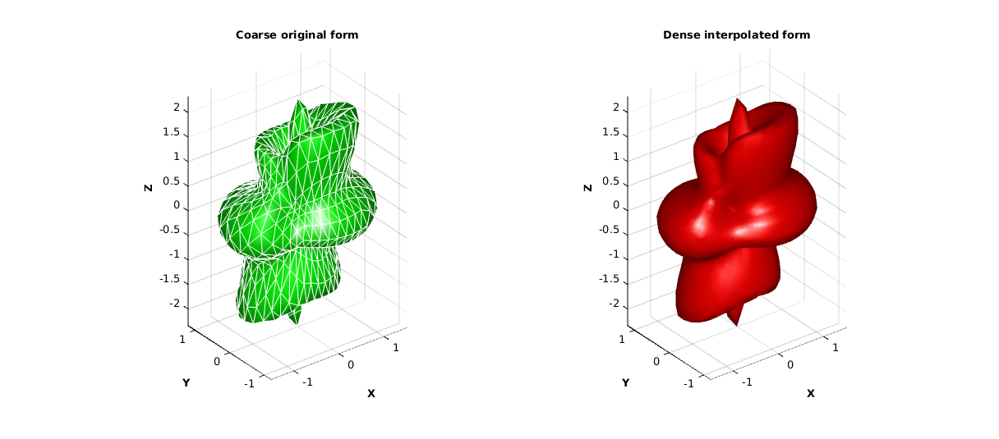
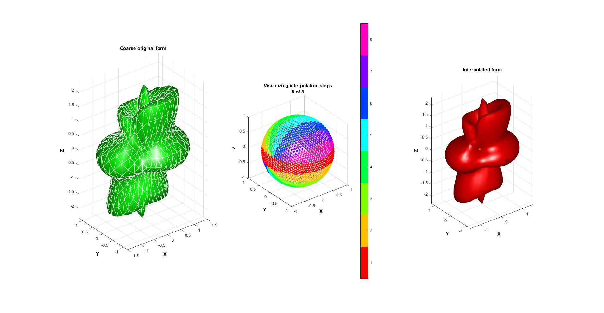

interp_spherical
Below is a demonstration of the features of the interp_spherical function
Contents
clear all; close all; clc;
PLOT SETTINGS
fig_color='k'; fig_colordef='black'; font_size=15; cmap=jet(250); falpha=0.75; patch_types={'sx','sy','sz','v'}; ptype=3; edge_width=2; line_width=2; marker_size=25; marker_size2=75;
Simulating sparse sampling of complex spherical function
%A triangulated representation is constructed allowing for surface %visualization. This is however not required. %Start with sphere triangulation (Buckminster-Fuller type) [F,V,Vs]=geoSphere(3,1); T=Vs(:,1); P=Vs(:,2); %Spherical coordinates %Modifying to obtain complex shape [DCM,~]=euler2DCM([0.25.*pi -0.25*pi 0]); %Rotate Vr=(V*DCM); [Tr,Pr,Rr]=cart2sph(Vr(:,1),Vr(:,2),Vr(:,3)); %convert to spherical coordinates [V(:,1),V(:,2),V(:,3)]=sph2cart(T,P,1+0.25*cos(2*(Tr))+0.25*cos(8*(P))); %Convert back with unity radii V(:,3)=V(:,3)*2; %Scale [T,P,R] = cart2sph(V(:,1),V(:,2),V(:,3)); %Convert to spherical coordinates %Defining denser point set for interpolation [Fi,Vi,Vsi]=geoSphere(4,1); Ti=Vsi(:,1); Pi=Vsi(:,2); %Spherical coordinates
Spherical interpolation
%The function |interp_spherical| interpolates in a spherical coordinate %sytem using standard interp2 type interpolation methods or those based on %Delaunay tesselations in the angular space such as natural neighbour %interpolation method. Standard spherical interpolation of this type %creates artifacts at the poles. Hence |interp_spherical| splits the %interpolation up into a number of steps (set by numberInterpSteps). The %function aims to interpolate at the "equator" such that polar artifacts %can be minimized. For each interpolation step the interpolation problem is %rotated such that the currect "equatorial band" is centered at the %equator. Running |interp_spherical| on its own without inputs or outputs %shows a demo animation of this stepwise process. numberInterpSteps=8; %Number of interpolation steps interpMethod='natural'; %The interpolation method %Spherical interpolation [Ri]=interp_spherical(T,P,R,Ti,Pi,interpMethod,numberInterpSteps); %Convert to Cartesian coordinates [Vi(:,1),Vi(:,2),Vi(:,3)]=sph2cart(Ti,Pi,Ri); %Plotting results hf1=figuremax(fig_color,fig_colordef); subplot(1,2,1); hold on; grid on; view(3); xlabel('X','FontWeight','bold','FontSize',font_size); ylabel('Y','FontWeight','bold','FontSize',font_size); zlabel('Z','FontWeight','bold','FontSize',font_size); title('Coarse original form','FontSize',font_size); hp1=patch('Faces',F,'Vertices',V); set(hp1,'FaceColor','g','EdgeColor','w'); axis equal tight vis3d; camlight('headlight'); lighting phong; set(gca,'FontSize',font_size); drawnow; ha=axis; subplot(1,2,2); hold on; grid on; view(3); xlabel('X','FontWeight','bold','FontSize',font_size); ylabel('Y','FontWeight','bold','FontSize',font_size); zlabel('Z','FontWeight','bold','FontSize',font_size); title('Dense interpolated form','FontSize',font_size); hp1=patch('Faces',Fi,'Vertices',Vi); set(hp1,'FaceColor','r','EdgeColor','none'); axis equal tight vis3d; axis(ha); camlight('headlight'); lighting phong; set(gca,'FontSize',font_size); drawnow;
Animation of build in demo for interp_spherical
interp_spherical;
DEMO MODE

GIBBON
Kevin M. Moerman (kevinmoerman@hotmail.com)